Rocket BLACKBOX is an open-source avionics and environmental data recorder for model rocketry and sounding rocket payloads.
Built around the RAK3112 module (ESP32-S3 + SX1262 LoRa), the board carries a multi-sensor array across two independent I2C buses, a 4-bit SDMMC slot for flight logging, multi-constellation GNSS with a 1PPS timing line, and a push-button soft-latch power circuit with USB battery management.
Sensors are split across two I2C buses and a dedicated GNSS UART.
| Primary Role | Data Types | Hardware Interface |
|---|---|---|
|
Barometric Altimeter MS5607 |
Barometric Pressure: 10 to 1200 hPa
(Resolution: 0.01 hPa / ~20 cm altitude, 24-bit ΔΣ ADC,
factory PROM calibration with CRC4 checksum) Temperature: −40°C to +85°C (Resolution: < 0.01°C, Accuracy: ±1.0°C) |
I2C Bus 10x77
|
|
CO2, Temperature & Humidity Sensirion SCD40 |
CO2 Concentration: 400 to 5000 ppm
(Resolution: 1 ppm, Accuracy: ±(40 ppm + 5% of
reading)) Temperature: −10°C to +60°C (Resolution: 0.01°C, 16-bit, Accuracy: ±0.8°C) Relative Humidity: 0% to 100% RH (Resolution: 0.01% RH, 16-bit, Accuracy: ±6% RH) |
I2C Bus 10x62
|
|
VOC & NOx Gas Index Sensirion SGP41 |
VOC Gas Index: 1 to 500 (16-bit raw
ticks, limit < 1 to 1000 ppm VOC) NOx Gas Index: 1 to 500 (16-bit raw ticks, detection limit 0.05 to 10 ppm NO2) Compensation: Accepts external humidity and temperature for baseline drift correction |
I2C Bus 10x59
|
|
Ambient & Solar Illuminance TSL25911FN |
Dual Optical Channels: CH0 Full
Spectrum (300–1100 nm) & CH1 Infrared (500–1100
nm) Dynamic Range: 600,000,000:1 (188 µlux up to 88,000 lux, 16-bit ADC) Programmable Gain: 1×, 25×, 428×, 9876× with 100–600 ms integration timing |
I2C Bus 10x29 (Device ID: 0x50)
|
|
UV Index & Ambient Light LTR-390UV-01 |
Ambient Light (ALS): 0.01 to 64,000 lux
(spectral peak 550 nm, photopic human eye response) UV Spectrum: UVA / UVB (280–400 nm), 13 to 20-bit resolution, UV Index 0 to 12+ |
I2C Bus 10x53
|
|
9-DOF IMU & Attitude Bosch BNO055 |
Accelerometer: ±2g to ±16g (14-bit, 3
axes) Gyroscope: ±125°/s to ±2000°/s (16-bit, 3 axes) Magnetometer: ±1300 µT (X, Y), ±2500 µT (Z) (16-bit, 0.3 µT resolution, 3 axes) Sensor Fusion: On-chip ARM Cortex-M0 coprocessor outputs quaternions (w, x, y, z) and Euler angles (0–360° @ 0.0625°) |
I2C Bus 20x28
|
|
GNSS & Time Sync Beitian BE-166 |
Position & Velocity:
GPS, Galileo, BeiDou, QZSS — 2.0 m CEP horizontal, 0.05
m/s velocity, up to 50,000 m altitude 1PPS Timing: Hardware pulse, 20 ns RMS |
UART (115200 baud) Hardware 1PPS line |
|
Auxiliary Environmental Bosch BME680 |
Barometric Pressure: 300 to 1100 hPa
(Resolution: 0.18 Pa / ~17 cm, Accuracy: ±0.12 hPa) Temperature & Humidity: −40°C to +85°C (Resolution: 0.01°C), 0% to 100% RH (Resolution: 0.008% RH) Gas Resistance: 10 Ω to 60 MΩ MOX sensor for bVOC detection |
I2C Bus 10x76
|
The schematic is organized as one block per subsystem. Environmental sensors share one I2C bus, the IMU has its own dedicated I2C bus, GNSS uses UART plus a hardware timing line, and logging uses 4-bit SDMMC.
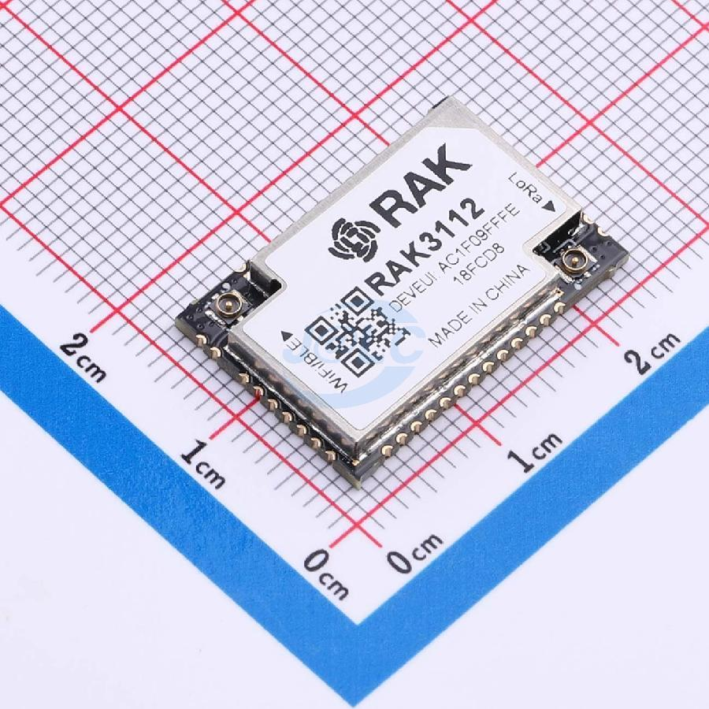
Central controller combining an ESP32-S3 with an SX1262 LoRa transceiver. It hosts the USB connection, both I2C buses, the GNSS UART, and the SDMMC interface. Dedicated buttons handle boot-mode entry and reset, a resistor divider feeds battery voltage to the ADC for monitoring, and separate lines hold power on, sense the power button, and drive the status LED.
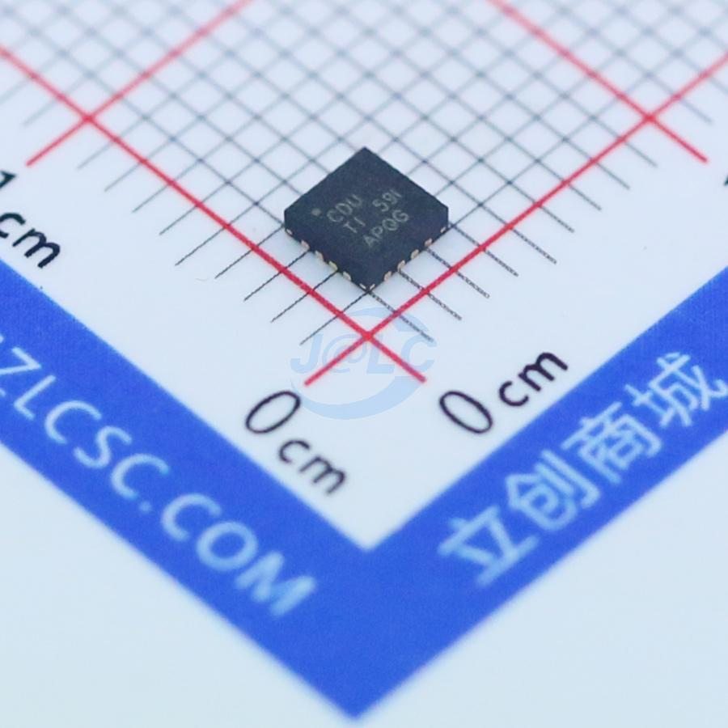
Built around the BQ24075 LiPo charger with power-path management, so the board runs from USB when present and seamlessly falls back to battery. Charge and power-good LEDs show charger state. A dual-MOSFET push-button soft-latch holds the charger output enabled after the button is released; the MCU keeps itself powered through a hold line and can shut the board down by releasing it. A manual cutoff switch fully disconnects the battery, and a divided-down tap of the button lets the MCU detect presses.
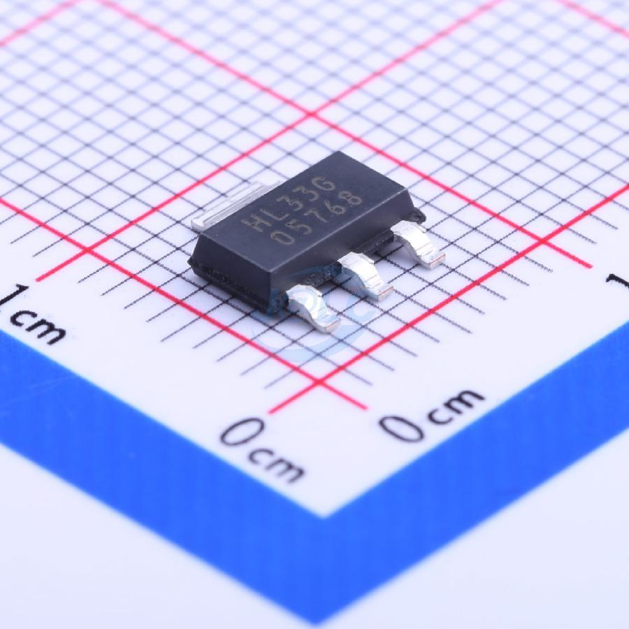
A 3.3 V LDO that powers the MCU, sensors, GNSS, and SD card from the charger output, keeping noisy supply switching away from the analog sensor rails.
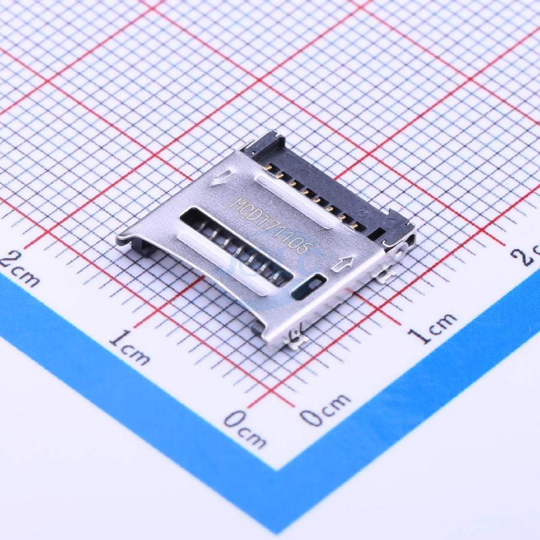
MicroSD slot wired in 4-bit SDMMC mode for high-speed flight logging, with pull-ups on clock, command, and all four data lines.
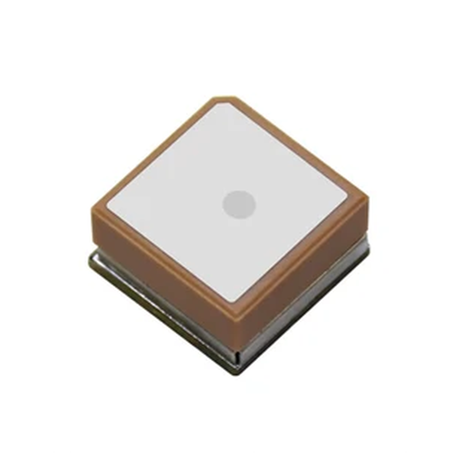
Beitian multi-constellation receiver with integrated antenna. It streams position over UART and provides a hardware 1-pulse-per-second output for precise time synchronization. Pin headers break out the serial and timing signals.
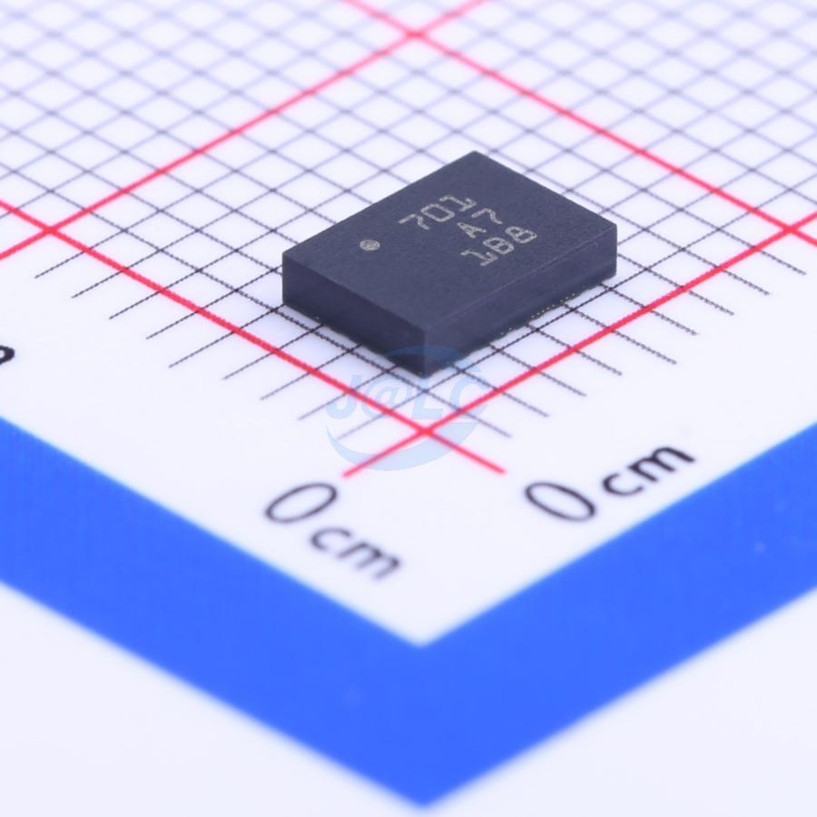
BNO055 with on-chip sensor fusion outputting absolute orientation as quaternions and Euler angles. It sits alone on the second I2C bus to avoid address conflicts with the environmental sensors, with a separate interrupt line for motion and data-ready events.
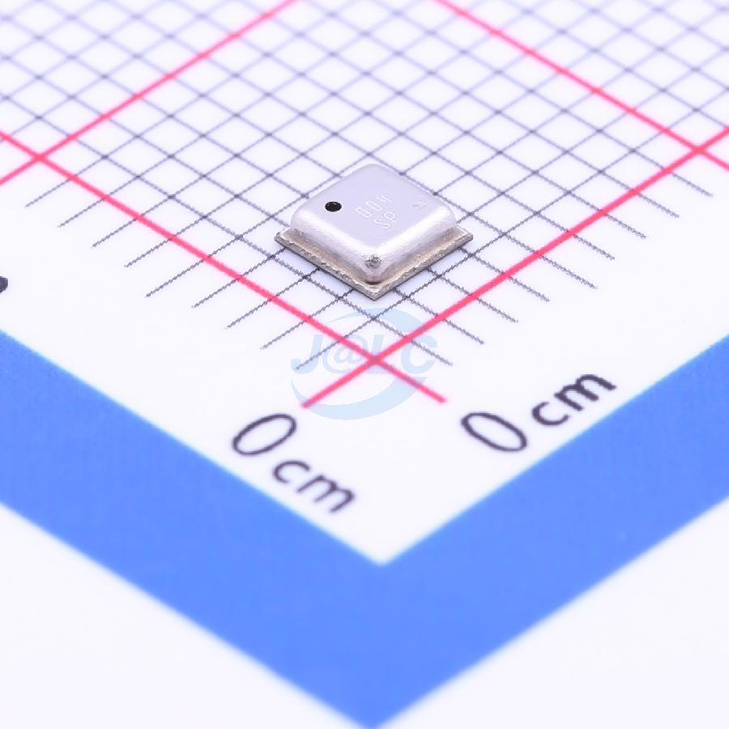
BME680 auxiliary environmental sensor for pressure, temperature, humidity, and gas resistance.
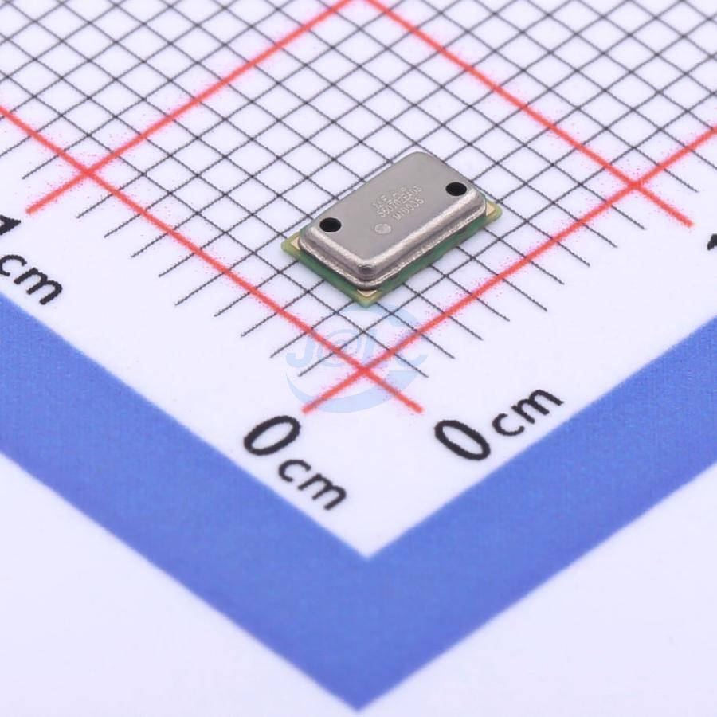
MS5607 barometric pressure and temperature sensor used as the primary altimeter, strapped for I2C operation.
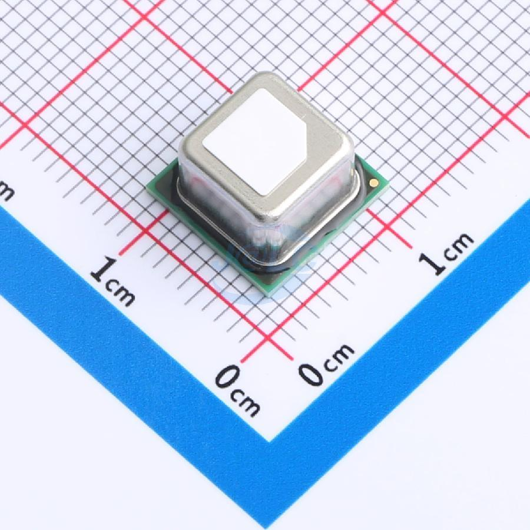
SCD40 photoacoustic CO2 sensor, also reporting temperature and relative humidity. Its core and heater supplies are tied together for 3.3 V operation as recommended for this use.
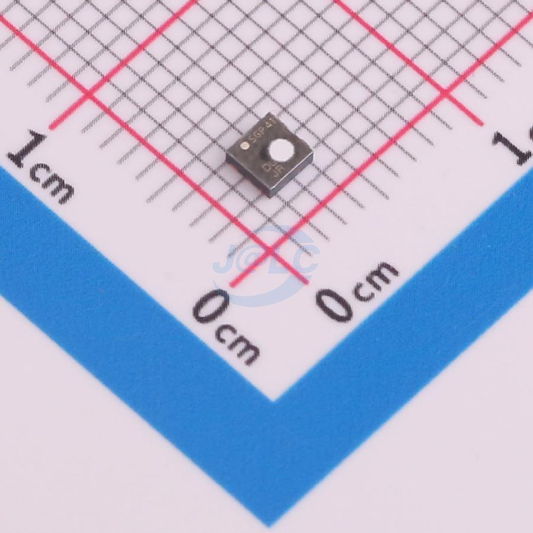
SGP41 metal-oxide gas sensor reporting VOC and NOx indices. Requires temperature and humidity compensation from the other sensors to correct baseline drift.
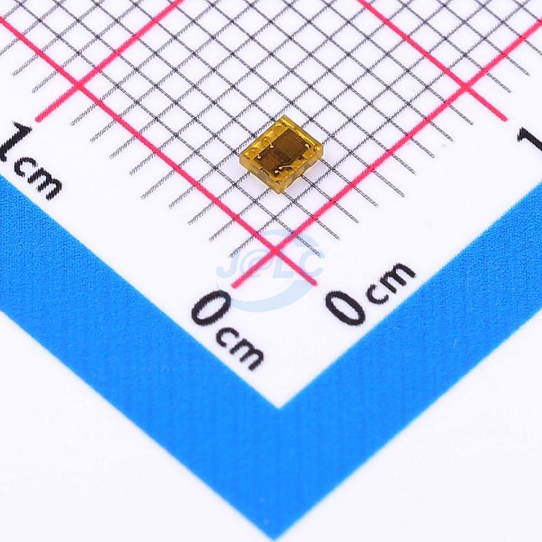
TSL25911FN dual-diode sensor measuring full-spectrum and infrared light separately so visible illuminance can be derived.
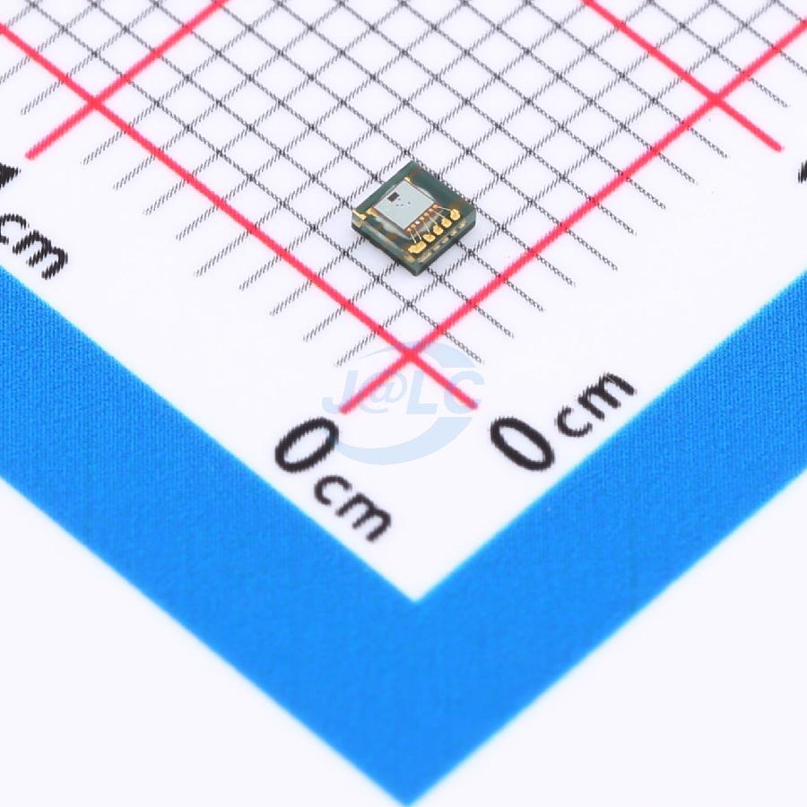
LTR-390 sensor measuring UVA/UVB for UV index plus ambient visible light, with an interrupt output for threshold events.
| MCU Pin | Sensor Pin | Description |
|---|---|---|
| Power & Housekeeping | ||
| GPIO 40 | PWR_EN |
Power hold latch output. Driven HIGH by MCU to maintain DC-DC / LDO power alive; pulled LOW to shut down. |
| GPIO 39 | PUSH_SW |
Push-button state detection input. Reads user button clicks after power-on. |
| GPIO 9 | VADC |
Battery voltage monitor (ADC1 Channel 8, 1/2 resistor divider 5.1 kΩ / 5.1 kΩ). |
| GPIO 45 | LED |
Active-high status and heartbeat LED indicator. |
| I2C Bus 1 - Environmental & Optical Sensors | ||
| GPIO 10 | SDA1 |
Environmental I2C Bus 1 serial data line (connected to MS5607, SCD40, SGP41, TSL25911FN, LTR-390, BME680 with 2.2 kΩ pull-up to 3.3V). |
| GPIO 11 | SCL1 |
Environmental I2C Bus 1 serial clock line (connected to MS5607, SCD40, SGP41, TSL25911FN, LTR-390, BME680 with 2.2 kΩ pull-up to 3.3V). |
| I2C Bus 2 - Inertial Navigation (BNO055) | ||
| GPIO 2 | SDA2 |
Inertial navigation I2C Bus 2 serial data line for BNO055 (with 2.2 kΩ pull-up to 3.3V). |
| GPIO 1 | SCL2 |
Inertial navigation I2C Bus 2 serial clock line for BNO055 (with 2.2 kΩ pull-up to 3.3V). |
| GPIO 4 | INT |
Hardware motion detection and data-ready interrupt line from BNO055. |
| GNSS - Beitian BE-166 | ||
| GPIO 42 | GNSS_TXD |
UART receiver input (MCU RX) listening to multi-constellation NMEA and UBX stream at 115200 baud from BE-166. |
| GPIO 41 | GNSS_RXD |
UART transmitter output (MCU TX) driving bidirectional UBX/NMEA configuration and query commands to BE-166. |
| GPIO 38 | GNSS_IPPS |
Microsecond-accurate hardware 1 pulse-per-second (1PPS) synchronization interrupt line from BE-166. |
| MicroSD - 4-Bit SDMMC Interface | ||
| GPIO 14 | CLK |
High-speed 4-bit parallel SDMMC clock line. |
| GPIO 21 | CMD |
High-speed 4-bit parallel SDMMC command and response line (with 10 kΩ pull-up to 3.3V). |
| GPIO 13 | DAT0 |
High-speed 4-bit parallel SDMMC data line bit 0 (with 10 kΩ pull-up to 3.3V). |
| GPIO 12 | DAT1 |
High-speed 4-bit parallel SDMMC data line bit 1 (with 10 kΩ pull-up to 3.3V). |
| GPIO 17 | DAT2 |
High-speed 4-bit parallel SDMMC data line bit 2 (with 10 kΩ pull-up to 3.3V). |
| GPIO 18 | DAT3 / CD |
High-speed 4-bit parallel SDMMC data line bit 3 / card detection (with 10 kΩ pull-up to 3.3V). |
This project's PCB & PCBA was sponsored by EasyEDA and fabricated by JLCPCB. Project was completed in October 2026.